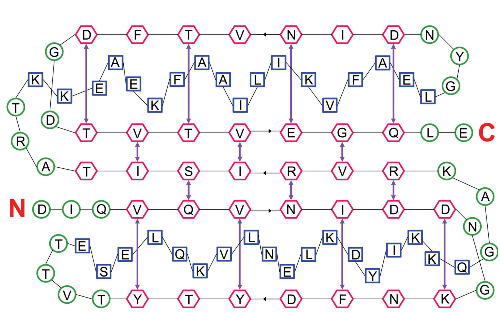
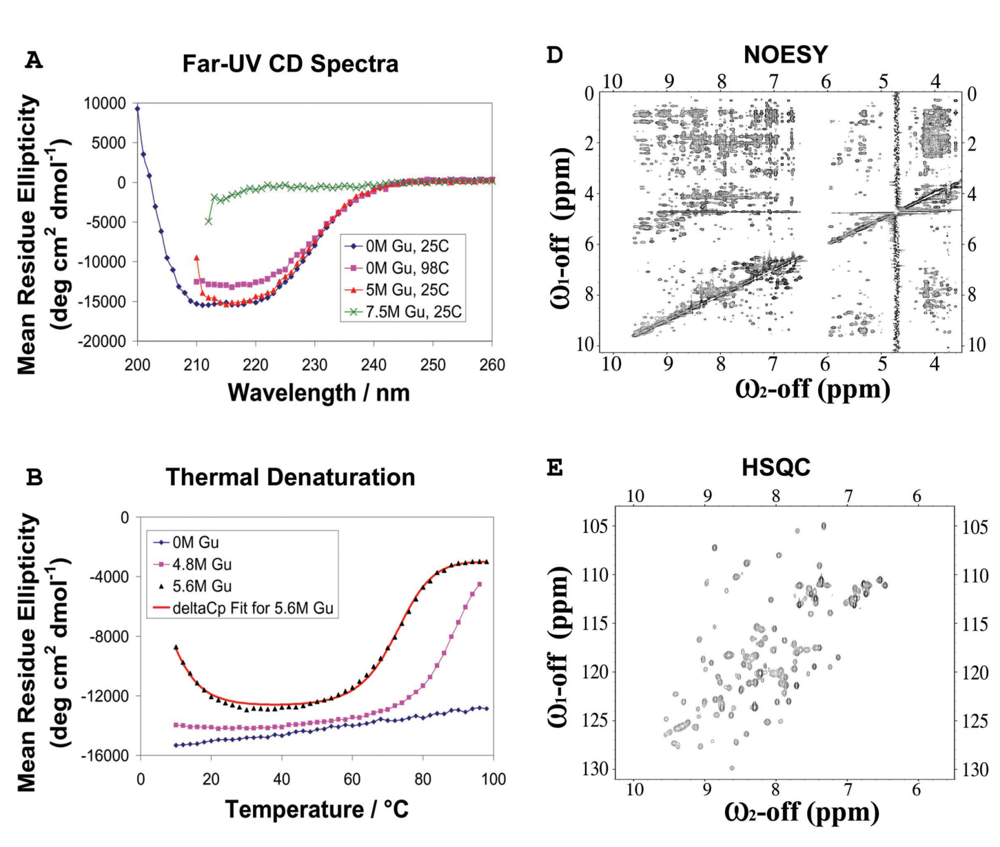
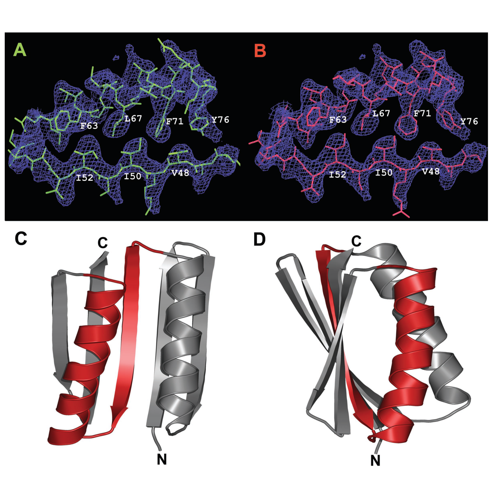
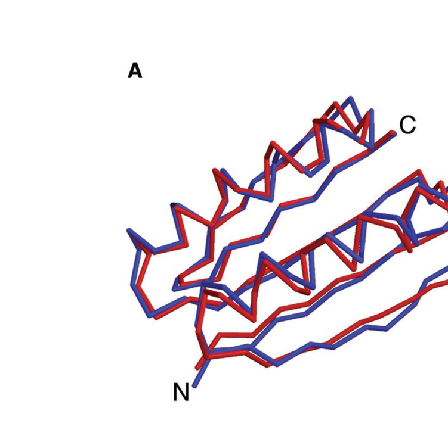

Design of a Novel Globular Protein Fold with Atomic-Level Accuracy
Brian Kuhlman, Gautam Dantas, Gregory C. Ireton, Gabriele Varani, Barry L. Stoddard, David Baker | Science 302: 1364-1368 (2003) | doi:10.1126/science.1089427
翻译说明(请先阅读)
1. 底本为 Science 官方重印版 PDF(6 页)的逐页文本提取。第 1 页开头的版权/水印文字("This copy is for your personal, non-commercial use only…"、"Downloaded from www.sciencemag.org…" 等重印版侧栏)以及第 6 页末尾混入的下一篇论文开头(Pak & Sheng, "Targeted Protein Degradation and Synapse Remodeling by an Inducible Protein Kinase")均不属于本文内容,未予翻译、径行略去。
2. 提取文本中的乱码符号已对照原版页面图像逐处核实复原:α、β、μ、ν、Δ(如 ΔCp)、=、×、~、≥、≈,以及上标(110⁷¹、75²²、10¹⁸⁶、mg ml⁻¹、kcal mol⁻¹、cal deg⁻¹ mol⁻¹、¹⁵N)。已核实的关键数值包括:"[~110 rotamers … per position]""(~75 rotamers per position)""110⁷¹ × 75²²(≈10¹⁸⁶)""~10 min""(~5 M) GuHCl""~1 mM""20 μM / 8 μM / 5 μM""≥95%""500 MHz""pH = 8.0 / pH = 6.0""RMSD = 1.17 Å"。
3. 排版与断词修复:"Moriet al."→"Mori et al.","Bru ¨nger"→"Brünger",注 42 "Acta Crystallagr."→"Acta Crystallogr.","The finalRwork"→"The final Rwork";跨行连字符(如 "de-signed""biolog-ist""Data-base")已合并;图 2 图注 (B) 中原印 "TOP7" 与正文 "Top7" 大小写不一,译文统一作 Top7。
4. 原文内部编号不一致:正文与注 32 两处称该甲硫氨酸突变/硒代甲硫氨酸位于第 37 位,而注 32 中构建体名作 "Top7_K35M"(35 与 37 不一致);均按原文照译,详见相应译注。
5. 图表引用保留英文原样,并以成对的尖角双书名号标记包裹(如 (Fig. 2A)、(Fig. 1, arrows) 保持英文且整体入标记);文献引注编号(如 (1–3)、(20, 21))保持原位、不改不译。
6. 引言末句 "Protein Structure Database (PDB)" 为原文用词(PDB 官方名称为 Protein Data Bank,蛋白质数据库),照原文译作"蛋白质结构数据库 (PDB)"。
7. 专业术语首现处附英文原词并给简要中文解释,较长背景以【译注】段落给出。参考文献与注释(References and Notes 1–44)逐条保留英文、不翻译;致谢含于注 44,保留英文并附中文要点译注。材料与方法在补充在线材料(SOM)中,正文提及处保留原编号(table S1、table S2 等)。
8. 摘要中 "root mean square deviation equals 1.2 angstroms" 为原文完整拼写,译作"均方根偏差为 1.2 Å(埃)"。
第一部分:论文全文翻译
作者与单位(原文题注脚注译文):1 华盛顿大学生物化学系 (Department of Biochemistry);2 华盛顿大学化学系 (Department of Chemistry);3 霍华德·休斯医学研究所 (Howard Hughes Medical Institute);以上三单位均属华盛顿大学 (University of Washington, Seattle, WA 98195, USA)。4 弗雷德·哈钦森癌症研究中心基础科学部 (Division of Basic Sciences, Fred Hutchinson Cancer Research Center, 1100 Fairview Avenue North, Seattle, WA 98109, USA)。＊号作者(Brian Kuhlman 与 Gautam Dantas)对本文贡献相同;† 现地址:北卡罗来纳大学教堂山分校生物化学与生物物理系 (Department of Biochemistry and Biophysics, University of North Carolina, Chapel Hill, NC 27599, USA);‡ 通讯作者:dabaker@u.washington.edu(David Baker)。
摘要
计算蛋白质设计 (computational protein design) 的一大挑战,是创造出具有任意选定三维结构的新蛋白质。在此,我们采用一种在序列设计与结构预测之间循环迭代的通用计算策略,设计出一个名为 Top7 的 93 残基 α/β 蛋白质,其序列与拓扑 (topology,即二级结构元件在肽链上的排列与连接方式) 均为全新。实验发现 Top7 呈折叠状态且极其稳定,而且 Top7 的 X 射线晶体结构与设计模型非常相近(均方根偏差为 1.2 Å(埃))。设计全新蛋白质折叠的能力,使得探索自然界中尚未观察到的大片"蛋白质宇宙"成为可能。
引言
自然界迄今观察到的蛋白质折叠 (protein fold) 数量庞大但有限;而尚未观察到的那些结构,究竟是物理上根本无法实现,还是仅仅尚未被演化过程采样到、或尚未被结构生物学家解析鉴定,目前并不清楚。对全新蛋白质结构进行从头设计 (de novo design,即不依赖任何天然模板、由计算从零生成序列与结构) 的方法,为解答这一问题提供了一条途径,而且或许更为重要的是,也为全新的蛋白质机器与蛋白质疗法提供了一条可能的途径。
在发展"鉴定与目标结构相容的氨基酸序列"的计算方法方面,人们已取得长足进步 (1–3),其中尤为突出的是 Mayo 及合作者对锌指蛋白的开创性完整再设计 (1)。但总体而言,这些方法并未被用于创造新的蛋白质结构,而是用于重新设计天然存在的蛋白质,以增强其稳定性或赋予其新功能 (4–6)。由于球状蛋白核心存在严苛的空间位阻限制,再设计蛋白中的侧链 (side chain,氨基酸挂在主链上的特征原子团) 堆积往往与原天然蛋白中的相当相似 (1, 7),因此高分辨率蛋白质主链 (backbone,肽链的 N–Cα–C 骨架) 坐标中保留着原天然序列的某种"记忆" (8–12)。而从零开始创造一个新蛋白质时,没有任何这样的序列记忆可以帮助设计,甚至无从知晓目标主链是否"可设计" (designable,即是否存在能折叠成它的低能序列)。因此,与再设计天然蛋白质相比,全新蛋白质结构的计算设计是对现有力场 (force field) 与优化方法学更为严格的检验。
由于任意选定的蛋白质主链恰好可设计的可能性不大,设计流程在序列空间之外还必须同时搜索邻近的构象空间,这一点至关重要。除了 Desjarlais 与 Handel 用于再设计一个小型天然蛋白疏水核心的方法 (2) 之外,以往大多数方法要么针对大量固定的主链构象优化氨基酸序列 (4, 12–14),要么——如 Harbury 及同事那项里程碑式的工作,即设计具有右手超螺旋扭转的卷曲螺旋寡聚体 (15)——针对大量固定的氨基酸序列精修主链构象 (15, 16)。这类方法可搜索的"序列-结构"组合的范围,受限于必须预先指定有限数目的主链构象或氨基酸序列。
我们发展了一套鉴定极低自由能 (free energy)"序列-结构"组合的通用流程:它在序列优化与结构预测之间循环迭代,可用于设计任意期望的目标结构。所有阶段都由同一能量函数引导搜索,且每一阶段只对上一轮迭代中找到的最低能量序列或结构继续优化,从而避免了对备选主链或备选序列进行大规模、计算代价高昂的枚举。与 Desjarlais 和 Handel 的遗传算法 (2)——那种算法将随机选出的二面角与残基身份同时扰动——不同,我们的流程在"固定主链构象下对序列做全面优化"与"固定序列下对主链坐标做基于梯度的优化"之间交替迭代。我们用这一方法创造了一个 93 残基的 α/β 蛋白质,其拓扑在蛋白质结构数据库 (PDB) 中并不存在。
结果
生成起始模型
从头设计流程的目标结构,既可以是一个精细的主链模型,也可以是一张"信封背面"式的随手草图 (back-of-the-envelope sketch)。因为我们的目标是创造一种全新的蛋白质折叠,我们依据蛋白质结构拓扑 (Topology of Protein Structure, TOPS) 服务器 (17) 选择了一种 PDB 中不存在的拓扑。随后为目标结构绘制了一幅粗略的二维示意图 (Fig. 1),并确定了界定该拓扑的约束条件 (Fig. 1, arrows)。接着,用 Rosetta 从头结构预测方法 (18),把从 PDB 中提取的、二级结构与示意图相一致的 3 残基与 9 残基片段组装起来,生成满足这些约束的三维模型,最终得到 172 个仅含主链的模型;这些模型具有期望的拓扑与二级结构含量,彼此之间的均方根偏差 (RMSD,衡量两组原子位置差异的常用度量) 为 2~3 Å。

Figure 1 图注翻译
Figure 1. 目标折叠的二维示意图(六边形代表 β 链;正方形代表 α 螺旋;圆形代表其他元件)。氢键配对以紫色箭头标示。图中标注的氨基酸为最终设计序列(Top7)中的氨基酸。
【译注】看图要点:这是整个设计的"蓝图"。六边形=β 链、正方形=α 螺旋、圆形=转角/环;紫色箭头指示 β 链之间的主链氢键配对,它们正是正文中"界定拓扑的约束条件"。元件沿肽链从 N 端到 C 端排列,给出自然界中从未出现过的连接方式;圆圈中标注的氨基酸为最终 Top7 序列——设计之初只有拓扑草图,氨基酸是后续序列设计环节填入的。
生成起始序列
对每个模型,我们都使用 RosettaDesign (9) 的蒙特卡罗 (Monte Carlo,一类引入随机扰动的随机优化方法) 搜索协议与能量函数进行序列设计;该能量函数以 12-6 列纳德-琼斯势 (Lennard-Jones 势,刻画原子间范德华吸引与近距排斥的经典对势)、取向依赖的氢键项 (19) 以及隐式溶剂化模型 (implicit solvation model,不显式摆放水分子、以连续介质近似水的影响) (20, 21) 为主。在 93 个位置中的 71 个位置上,允许出现除半胱氨酸外的所有氨基酸 [每位点约取自 Dunbrack 旋转异构体库 (22) 的 ~110 个旋转异构体 (rotamer,即侧链 χ 二面角的离散优选构象)];其余 22 个位于表面的 β 折叠片位置则限定为极性氨基酸(每位点 ~75 个旋转异构体)。在奔腾 III(英特尔)处理器上,搜索 110⁷¹ × 75²²(≈10¹⁸⁶)种旋转异构体组合,每个模型约需 10 分钟。
由于起始主链构象在生成时并未考虑侧链堆积,可以预料,极低自由能的序列可能根本不存在(也就是说,这些结构是不可设计的)。事实上,为起始结构选出的最低能量序列,其能量明显高于大小相近的天然蛋白。特别是,核心残基的列纳德-琼斯相互作用能,比天然蛋白核心中同类残基的相互作用能平均差 0.8 kcal mol⁻¹。对不考虑侧链堆积而生成的主链而言低能序列并不存在——这一发现强调,在通用蛋白质设计中,必须将序列设计与主链柔性耦合起来。
序列与结构的同步优化
该设计流程的关键特征,就在于前述序列设计与主链优化之间的循环交替。主链优化步骤的目标——为固定的氨基酸序列寻找最低自由能的主链构象——在形式上与高分辨率结构预测问题类似,我们使用的是自己为结构预测开发的 Rosetta 程序 (23)。主链二面角用蒙特卡罗最小化 (Monte Carlo minimization, MCM;随机扰动与局部能量最小化交替的构象搜索协议) (24) 进行优化,其中每一步移动包含以下组成部分。(i) 初始扰动:或是对随机选出的 1~5 个残基的二面角做小幅随机改动,或是把 1~3 个连续残基的主链二面角替换为 PDB 中某一结构中的二面角;在后一种情形,还会调整邻近残基的二面角,以尽量减小肽链下游部分的位移。(ii) 快速优化侧链构象:对所有在第 (i) 步之后能量升高的残基位置,逐位置轮流遍历其每个旋转异构体,把当前侧链构象替换为能量最低的旋转异构体构象。(iii) 用准牛顿法 (quasi-Newton method,一类利用梯度信息的局部优化算法) (25) 做能量最小化,优化插入位点周围 10 个残基窗口内的主链二面角。每一步移动,依据最终最小化结构与起始结构之间的能量差、按 Metropolis 判据(能量下降必接受、能量上升按概率接受)决定接受或拒绝。主链优化与序列设计使用同一能量函数。每一轮主链松弛由数千次这样的蒙特卡罗最小化移动组成;每 20 次移动后,再用蒙特卡罗程序对侧链旋转异构体构象做一次完全的组合优化。对每个起始结构,进行 5 次独立模拟,每次包含 15 轮 (cycle) 序列设计与主链优化,用以获得低能量的"结构-序列"组合。最终所得能量与天然蛋白中观察到的能量相当。
采用该流程的早期版本——其列纳德-琼斯排斥项经过阻尼、且蒙特卡罗优化中不做最小化步骤——设计的蛋白,经实验观察相当稳定,但核心似乎呈某种"熔融"(molten,指堆积松散、类似熔球态的状态) 状态 (26)。为优化空间堆积,我们依据高分辨率蛋白结构中原子对的最接近距离对原子半径做了重新参数化,在所有原子上显式加入质子,大幅加重原子-原子重叠的惩罚,并在主链变动中采用完整的蒙特卡罗最小化协议,从而生成了能量低得多的"序列-结构"组合(在最终的 860 个模型中,有 20% 的列纳德-琼斯能量比 PDB 中的平均蛋白更为有利)。经过这些改进,我们用该流程设计出一个称为 Top7 的蛋白质序列 (27)。在松弛过程中,Top7 埋藏残基的平均列纳德-琼斯能量逐渐变得有利 (table S1);而且,尽管迭代精修过程中结构变化不大(最终蛋白主链模型与起始模型的 RMSD 为 1.1 Å),这些结构变化却给设计序列带来了剧变:Top7 中只有 31% 的残基与起始序列相同。无论是 Top7 序列,还是迭代"序列-结构"精修之前的序列,都与任何天然存在的蛋白序列没有显著相似性;在非冗余蛋白序列数据库中,用 PSI-BLAST (28) 检索到的与 Top7 序列最接近的匹配,甚至弱于随机巧合的预期水平(E 值 = 1.6)。
Top7 的生物物理与结构表征
Top7 蛋白 (29) 的折叠、稳定性与结构用多种生物物理方法进行了分析。Top7 蛋白高度可溶(溶解度达 25~60 mg ml⁻¹),凝胶过滤色谱表明其为单体。Top7 的圆二色 (circular dichroism, CD;远紫外 CD 光谱形状可反映二级结构组成) 光谱具有 α/β 蛋白的典型特征 (Fig. 2A),而且该蛋白热稳定性极为出众:98°C 下的 CD 谱与 25°C 下的几乎无法区分。在中等浓度(~5 M)的盐酸胍 (guanidine hydrochloride, GuHCl;常用化学变性剂) 中,Top7 随温度升高发生协同去折叠,并表现出冷变性(cold denaturation,低温下水合作用驱动蛋白质自发去折叠)(Fig. 2B)。将这些数据拟合 Gibbs-Helmholtz 方程,得到与去折叠相关的每残基恒压热容变化 (ΔCp) 约为 10 cal deg⁻¹ mol⁻¹,这是该大小折叠良好蛋白的典型数值 (30)。GuHCl 诱导的 Top7 化学变性是协同的,其陡峭的转变是小分子量、单体的单结构域蛋白所应具有的两态去折叠(只存在折叠态与去折叠态两种状态)的特征 (Fig. 2C)。将化学变性数据拟合两态去折叠模型,得到 25°C 下去折叠自由能为 13.2 kcal mol⁻¹,表明 Top7 比大多数相似大小的蛋白都更稳定 (31)。Top7 的核 Overhauser 效应谱 (nuclear Overhauser effect spectroscopy, NOESY;给出质子间近距离接触信息) 与异核单量子相干谱 (heteronuclear single-quantum coherence, HSQC;每个酰胺各出一峰的"指纹谱")(Fig. 2, D and E) 呈现出具有大量 β 折叠片含量的折叠蛋白的特征。HSQC 谱中交叉峰数目与预期一致,谱峰分散度与相似大小的 α/β 蛋白相当。强的主链 NH-Hα 交叉峰,以及在水质子信号低场一侧(低至 6 ppm)观察到的 Hα 共振,表明存在 β 折叠片;而 NH-NH 峰则与该蛋白具有部分螺旋特征相一致。

Figure 2 图注翻译
Figure 2. Top7 的生物物理表征。
(A) 20 μM Top7 在 25 mM Tris-HCl、30 mM NaCl、pH = 8.0 条件下,于不同温度与不同 GuHCl 浓度时的远紫外 (UV) CD 光谱。
(B) 8 μM Top7 在 25 mM Tris-HCl、30 mM NaCl、pH = 8.0 中,于 2 mm 比色皿内测得的 220 nm 处 CD 信号随温度与 GuHCl 浓度的变化。
(C) 5 μM 蛋白在 25 mM Tris-HCl、30 mM NaCl、pH = 8.0、25°C、1 cm 比色皿条件下,220 nm 处 CD 信号随 GuHCl 浓度的变化。
(D) ~1 mM Top7(pH = 6.0)的 NOESY 谱,于 298 K、500 MHz、混合时间 200 ms、采用 Watergate 水峰抑制采集。ν 为频率。
(E) ~1 mM ¹⁵N-Top7(pH = 6.0)的 HSQC 谱,于 298 K、500 MHz 条件下用 Mori et al. (43) 的快速 HSQC 方案采集。
【译注】看图要点:(A) 远紫外 CD 光谱形状随温度/GuHCl 变化极小,直观展示超常稳定性;(B) 220 nm 信号对温度-变性剂浓度二维扫描,呈现"加热去折叠 + 低温冷变性"的协同曲面,是拟合 Gibbs-Helmholtz 方程求 ΔCp 的数据源;(C) S 形陡峭转变 = 两态协同去折叠,拟合得 ΔG = 13.2 kcal/mol;(D) NOESY 中 NH–Hα 强交叉峰与低于 6 ppm 的 Hα 共振是 β 折叠片特征;(E) HSQC 峰数与预期一致、分散良好,说明蛋白折叠均一、不聚集。注意 (A)–(C) 缓冲液 pH = 8.0 而 (D)(E) NMR 实验 pH = 6.0。
对 Top7 的结晶尝试获得了可衍射至 2.5 Å 的晶体。引人注目的是,直接用设计模型作搜索模型,便得到了解决相位问题的强分子置换 (molecular replacement, MR;用已知结构模型推算衍射相位的晶体学方法) 解。这立刻表明设计模型已相当接近真实结构:要知道,即使是核磁共振 (NMR) 溶液结构与 X 射线晶体结构之间的微小偏差,也可能令分子置换搜索失败。为了获得无偏的相位信息,我们制备并结晶了 Top7 的硒代甲硫氨酸 (selenomethionyl, SeMet;甲硫氨酸中硫被硒取代,提供反常散射信号) 取代变体——将第 37 位的表面赖氨酸突变为甲硫氨酸——并通过直接在无偏的单波长反常差分 (single-wavelength anomalous difference, SAD) 电子密度图 (Fig. 3B) 与残差差值傅里叶图中搭建模型,将 X 射线晶体结构解析至 2.5 Å (32)。最终 Rwork 与 Rfree(晶体学精修残差指标,后者用未参与精修的数据交叉验证)分别为 0.268 与 0.293 (table S2)。

Figure 3 图注翻译
Figure 3. 无偏 SAD 密度图中 Top7 的示意图。
(A 和 B) 计算设计的 Top7(左,绿色)与 2.5 Å X 射线结构(右,红色)中残基 46 至 76 的棍式表示,叠加显示于无偏密度(蓝色)之上。该图由单一 SeMet 取代 Top7 变体的 SAD 定相、再经密度修饰后生成。
(C 和 D) Top7 的带状图,残基 46 至 76 以红色标示。两图绕垂直轴相对旋转 90°。
【译注】看图要点:"无偏 (unbiased)"是关键词——相位完全来自硒原子的反常散射,不含任何设计模型的先验信息,从而避免"用设计验证设计"的循环论证;蓝色密度与两种模型(绿=设计、红=晶体)高度吻合,即原子级一致性的直接视觉证据。(C)(D) 的带状图显示该段在整体结构中的位置(从两个相差 90° 的视角)。
高分辨率晶体结构表明,Top7 蛋白确实采用了所设计的拓扑 (Fig. 4A)。事实上,在原子分辨率上,该结构与设计模型惊人地相似(全部主链原子的 RMSD 为 1.17 Å)。除两个转角(分别由残基 11 至 15 和 24 至 31 组成)外,蛋白整体结构非常有序;这两个转角均表现出偏高的 B 因子(B-factor,晶体学中衡量原子热振动/无序程度的参数)与质量较差的电子密度。两个转角中的第一个,连同其相邻 β 链上紧邻的若干残基,是与计算模型偏差最大的区域。然而,即使在该区域,两个模型之间的全原子 RMSD 也未超过 2.8 Å。相比之下,X 射线结构的 C 端一半高度有序,且与计算模型非常相似;例如,从 Asp78 到 Gly85 的区域全原子 RMSD 为 0.79 Å (Fig. 4B)。已解析结构核心处的许多侧链,与所设计 Top7 的侧链实际上可以完全叠合 (Fig. 4C)。

Figure 4 图注翻译
Figure 4. 计算设计模型(蓝色)与 Top7 已解析 X 射线结构(红色)的比较。
(A) 模型与结构的 Cα 叠合立体图(主链 RMSD = 1.17 Å)。
(B) X 射线结构与模型的 C 端一半极其相似。所示代表性区域(Asp78 至 Gly85)的全原子 RMSD 为 0.79 Å,主链 RMSD 为 0.54 Å。
(C) 设计模型与已解析结构核心处可有效叠合的侧链的立体表示。
【译注】看图要点:(A) 蓝红两条主链几乎处处重合,1.17 Å 的主链 RMSD 达到"两个实验结构之间"的水平;(B) C 端一半精至 0.79 Å(全原子),意味着不仅主链走向一致,连侧链姿态都被设计预演;(C) 核心底部的侧链对(立体对图,可交叉眼观看)展示"设计即结构"——底部堆积如拉链般咬合。立体图 (A)(C) 需交叉视或立体镜观察。
与设计模型一样,TOPS 服务器也判定 Top7 晶体结构为一种新拓扑。在用 Dali(基于距离矩阵的蛋白质结构相似性搜索程序)对 PDB 的搜索 (33) 中,找到的最强结构相似性对象,是 668 残基蛋白 S-腺苷甲硫氨酸脱羧酶 (S-adenosylmethionine decarboxylase) 的一段不连续片段——该酶在 β1 与 β2 链之间有一段大至 68 个残基的插入,且其第三与第四条 β 链由一段未经精修的环(而非螺旋)相连。据蛋白质结构分类 (Structural Classification of Proteins, SCOP) 数据库的管理者 A. Murzin 所言,SCOP 中并不存在 Top7 折叠 (34, 35)。
意义
Top7 设计模型与晶体结构之间 1.17 Å 的主链原子 RMSD 意味着:设计所用自由能函数中的深谷,对应于真实自由能景观 (free energy landscape,以构象为坐标、自由能为高度的能量曲面) 中的深谷,因而这是对当前势函数准确性的一项重要验证。这种原子级精度与天然序列从头 (ab initio) 结构预测的低精度形成鲜明对比:在结构预测关键评估 (Critical Assessment of Structure Prediction, CASP;蛋白质结构预测方法的双盲评测实验) 实验中,针对 90 至 100 残基蛋白的最准确结构预测,其与实验解析结构的 RMSD 也大于 4 Å。为什么序列与结构的同步优化能找到全局自由能极小值,而固定序列下只优化结构却不能?答案可能涉及从头结构预测面临的两大挑战:待搜索构象空间极其庞大而崎岖,以及现有势函数精度有限。与序列固定的标准从头预测相比,改变序列、进而重塑能量景观的能力,可能极大地方便了对低自由能蛋白结构的搜索。此外,Top7 不受功能约束——功能约束会导致天然结构中出现局部次优区域,而这类区域对结构预测尤其困难——同时,对折叠自由能更充分的优化也可能部分弥补势函数的不精确。最后应当指出,设计过程完全聚焦于最小化折叠单体的自由能;获得高度稳定的新结构,既不需要针对可能的备选构象进行大量的负设计 (negative design,即主动抬高非目标构象的能量以避免其出现) (36, 37),也无需考虑蛋白质折叠的动力学过程 (38)。
Top7 的设计表明,自然界中尚未观察到的球状蛋白折叠不仅在物理上是可能的,而且可以极为稳定。这一结果延伸了早前的观察,即自然界中不存在的螺旋卷曲螺旋几何构型可以通过计算蛋白质设计产生 (15)。因此,未来的蛋白质疗法与分子机器,不应局限于生物演化过程所采样的那些结构。用于设计 Top7 的方法原则上适用于任何球状蛋白结构,并为探索和利用一个广阔的、全新的蛋白质结构与架构世界打开了大门。
【译注】本段是全文思想密度最高的部分,可拆成三层:(1) 设计成功 = 势函数验证——能量函数能把"深谷"放到正确位置;(2) 设计为何比预测更容易达到原子精度——序列可变,可把能量景观"改造成自己擅长的样子",且无功能约束拖累;(3) 仅凭"正设计"(最小化目标态能量)即可成功,未需负设计与折叠动力学考虑,说明对小单结构域球蛋白而言能量最优化已是充分策略。这也为后续二十年的"能量函数迭代改进"路线定下了调子。
参考文献(References and Notes,保留英文原文,不翻译)
1. B. I. Dahiyat, S. L. Mayo, Science 278, 82 (1997).
2. J. R. Desjarlais, T. M. Handel, Protein Sci. 4, 2006 (1995).
3. J. W. Ponder, F. M. Richards, J. Mol. Biol. 193, 775 (1987).
4. J. Reina et al., Nature Struct. Biol. 9, 621 (2002).
5. L. L. Looger, M. A. Dwyer, J. J. Smith, H. W. Hellinga, Nature 423, 185 (2003).
6. S. M. Malakauskas, S. L. Mayo, Nature Struct. Biol. 5, 470 (1998).
7. E. C. Johnson, G. A. Lazar, J. R. Desjarlais, T. M. Handel, Structure Fold. Des. 7, 967 (1999).
8. P. Koehl, M. Levitt, J. Mol. Biol. 293, 1161 (1999).
9. B. Kuhlman, D. Baker, Proc. Natl. Acad. Sci. U.S.A. 97, 10383 (2000).
10. A. Jaramillo, L. Wernisch, S. Hery, S. J. Wodak, Proc. Natl. Acad. Sci. U.S.A. 99, 13554 (2002).
11. K. Raha, A. M. Wollacott, M. J. Italia, J. R. Desjarlais, Protein Sci. 9, 1106 (2000).
12. A. Su, S. L. Mayo, Protein Sci. 6, 1701 (1997).
13. S. M. Larson, J. L. England, J. R. Desjarlais, V. S. Pande, Protein Sci. 11, 2804 (2002).
14. B. Kuhlman, J. W. O'Neill, D. E. Kim, K. Y. Zhang, D. Baker, J. Mol. Biol. 315, 471 (2002).
15. P. B. Harbury, J. J. Plecs, B. Tidor, T. Alber, P. S. Kim, Science 282, 1462 (1998).
16. A. E. Keating, V. N. Malashkevich, B. Tidor, P. S. Kim, Proc. Natl. Acad. Sci. U.S.A. 98, 14825 (2001).
17. The TOPS database is available at www.tops.leeds.ac.uk/.
18. P. M. Bowers, C. E. Strauss, D. Baker, J. Biomol. NMR 18, 311 (2000).
19. T. Kortemme, A. V. Morozov, D. Baker, J. Mol. Biol. 326, 1239 (2003).
20. T. Lazaridis, M. Karplus, Proteins Struct. Func. Genet. 35, 132 (1999).
21. Materials and methods are available as supporting material on Science Online.
22. R. L. Dunbrack, F. E. Cohen, Protein Sci. 6, 1661 (1997).
23. R. Bonneau et al., Proteins (suppl. 5), 119 (2001).
24. C. Rohl, C. E. M. Straus, K. M. S. Misura, D. Baker, Methods Enzymol., in press.
25. We used the Davidson-Fletcher-Powell algorithm as described by W. H. Press et al., in Numerical Recipes in C (Cambridge Univ. Press, Cambridge, ed. 2, 1992), pp. 428–429.
26. B. Kuhlman et al., data not shown.
27. The sequence of Top7 is mgDIQVQVNIDDNGKNFDYTYTVTTESELQKVLNELKDYIKKQGAKRVRISITARTKKEAEKFAAILIKVFAELGYNDINVTFDGDTVTVEGQLEggslehhhhhh; the computationally designed sequence is in uppercase and residues added to allow expression and purification are in lowercase. Single-letter abbreviations for the amino acid residues are as follows: A, Ala; C, Cys; D, Asp; E, Glu; F, Phe; G, Gly; H, His; I, Ile; K, Lys; L, Leu; M, Met; N, Asn; P, Pro; Q, Gln; R, Arg; S, Ser; T, Thr; V, Val; W, Trp; and Y, Tyr.
28. S. F. Altschul et al., Nucleic Acids Res. 25, 3389 (1997).
29. A synthetic gene with the Top7 sequence under the control of the T7 promoter, a C-terminal 6X His tag, and codon usage optimized for Escherichia coli was obtained from BlueHeron Biotechnologies (Bothell, WA). After expression in E. coli, the protein was readily purified to ≥95% homogeneity with the use of nickel affinity chromatography followed by anion exchange chromatography.
30. J. K. Myers, C. N. Pace, J. M. Scholtz, Protein Sci. 4, 2138 (1995).
31. K. W. Plaxco, K. T. Simons, D. Baker, J. Mol. Biol. 277, 985 (1998).
32. The structure of Top7_K35M was solved by molecular replacement with the program EPMR (39) and by direct rebuilding into an unbiased SAD electron density map and residual difference Fourier maps. For molecular replacement, 19 large surface residues such as Lys, Arg, Gln, and Glu were truncated to Ala in the search model. The correlation coefficient for the initial MR search, using data to 4.0 Å resolution, was 0.52, compared with background of 0.36. For SAD phasing, the position of SeMet 37 was determined from an anomalous difference Patterson map. The initial phasing power and figure of merit for SAD phasing were 1.99 and 0.24, respectively, before density modification. An interpretable electron density map was obtained after density modification with solvent flipping with a solvent content of 43% with the use of CNS (40). An initial model was built with the use of XtalView (41) and O (42). The model was refined with CNS with the use of the mlhl target (maximum likelihood, Hendrickson-Lattman coefficients) with 5% of the data excluded for the calculation of the cross-validating free R. Of all the built residues, 88% are in the most favorable regions of Ramachandran space, and 12% are in the allowed regions. Statistics from phasing and refinement are shown in table S2.
33. L. Holm, C. Sander, Trends Biochem. Sci. 20, 478 (1995).
34. T. J. Hubbard, A. G. Murzin, S. E. Brenner, C. Chothia, Nucleic Acids Res. 25, 236 (1997).
35. A. Murzin, personal communication.
36. J. J. Havranek, P. B. Harbury, Nature Struct. Biol. 10, 45 (2003).
37. W. Jin, O. Kambara, H. Sasakawa, A. Tamura, S. Takada, Structure (Cambridge) 11, 581 (2003).
38. L. Mirny, E. Shakhnovich, J. Mol. Biol. 308, 123 (2001).
39. EPMR: A program for crystallographic molecular replacement by evolutionary search (C. R. Kissinger, D. K. Gehlhaar, Agouron Pharmaceuticals, La Jolla, CA).
40. A. T. Brünger et al., Acta Crystallogr. D. Biol. Crystallogr. 54, 905 (1998).
41. D. E. McRee, J. Struct. Biol. 125, 156 (1999).
42. T. A. Jones, J. Y. Zou, S. W. Cowan, M. Kjeldgaard, Acta Crystallogr. A47, 110 (1991).
43. S. Mori, C. Abeygunawardana, M. O. Johnson, P. C. van Zijl, J. Magn. Reson. B 108, 94 (1995).
44. We acknowledge the expert assistance of B. Shen in crystallographic phasing, modeling, and refinement of the TOP7 structure, C. Rohl for aiding in the incorporation of RosettaDesign into Rosetta, C. Strauss for helping to generate the initial models of Top7, T. Leeper for help with two-dimensional NMR studies, and R. Klevit and the Klevit laboratory for help with preliminary NMR characterization of Top7. Academic users can obtain licensing information for RosettaDesign at www.unc.edu/kuhlmanpg/rosettadesign.htm. The coordinates and structure factors for the Top7 x-ray crystal structure have been deposited in the PDB with accession code 1QYS. B.K. was supported by a fellowship from the Cancer Research Fund of the Damon Runyon–Walter Winchell Foundation. This work was also supported by NIH grants to G.V., B.L.S., and D.B.
【译注】注 27(中文要点):Top7 全序列中,大写部分为计算设计序列;小写部分为表达纯化所加——并头 "mg" 与结尾 "ggslehhhhhh"(柔性接头 + 6×His 标签)。注 29:合成基因由 BlueHeron Biotechnologies 提供,T7 启动子、大肠杆菌密码子优化,镍亲和+阴离子交换层析纯化至 ≥95% 纯度。
【译注】注 44(致谢中文要点):感谢 B. Shen 在 TOP7 晶体学定相、建模与精修中的帮助;C. Rohl 协助将 RosettaDesign 并入 Rosetta;C. Strauss 协助生成 Top7 初始模型;T. Leeper 协助二维 NMR;R. Klevit 及其实验室协助初步 NMR 表征。RosettaDesign 学术授权信息见 www.unc.edu/kuhlmanpg/rosettadesign.htm。Top7 晶体结构坐标与结构因子已存入 PDB(编号 1QYS)。B.K. 获 Damon Runyon–Walter Winchell 癌症研究基金奖学金资助;G.V.、B.L.S.、D.B. 获 NIH 基金资助。另请注意:注 32 构建体名 "Top7_K35M" 中 "35" 与正文/注 32 内两处 "第 37 位" 不一致,系原文如此(应指同一个引入甲硫氨酸/SeMet 的位点,疑为笔误或编号口径差异)。
补充在线材料与时间线
- Supporting Online Material(材料与方法、表 S1 至 S6):www.sciencemag.org/cgi/content/full/302/5649/1364/DC1
- 论文时间线:2003 年 7 月 21 日投稿;2003 年 9 月 25 日录用(原文:21 July 2003; accepted 25 September 2003)。
第二部分:翻译后总结与分析(译者撰写,非论文原文)
一、全文核心逻辑回顾(一分钟版)
- 提出问题:自然界只观察到有限多种蛋白质折叠;没出现过的折叠是"物理不允许",还是"演化没试过/结构生物学没解析过"?从头设计可回答此问题,还可能带来新蛋白机器与新疗法。
- 方法闭环:① 按 TOPS 服务器选一种 PDB 中不存在的拓扑,画二维示意图 + 氢键约束;② 用 Rosetta 片段组装生成 172 个满足拓扑的主链模型(彼此 RMSD 2–3 Å);③ RosettaDesign 为每个主链做序列设计(71 个位点允许除 Cys 外全部氨基酸 ~110 rotamer/位点,22 个表面 β 位点限极性氨基酸 ~75 rotamer/位点,~10 分钟/模型);④ 关键创新——序列设计与主链优化(蒙特卡罗最小化)交替迭代,15 轮 × 5 次独立模拟;⑤ 发现旧协议产生"熔融核心",重参数化原子半径 + 显式质子 + 陡化重叠惩罚后,860 个模型中 20% 的 LJ 能量优于 PDB 平均 → 选定 Top7。
- 实验验证:高溶解(25–60 mg/ml)、单体;远紫外 CD 呈 α/β 谱且 98°C 几乎不变;GuHCl 变性协同、两态、ΔG = 13.2 kcal/mol(比同尺寸蛋白更稳);NOESY/HSQC 证明良好折叠;2.5 Å 晶体,设计模型直接分子置换成功,再用 SeMet SAD 无偏定相独立解析;主链 RMSD 仅 1.17 Å;Dali/SCOP 确认新拓扑。
- 核心结论:自然界未观察的折叠不仅物理可能,还可超稳定;设计能量函数的"深谷"对应真实自由能景观的"深谷"——原子级精度验证了 Rosetta 势函数;同时改序列+结构之所以比固定序列预测更容易找到全局极小,是因为可以"重塑"能量景观、且无功能约束拖累,也无需负设计与折叠动力学考虑。
二、新颖点分析
- 1. 首个全新拓扑的从头设计蛋白,并以原子级精度得到实验证实。 此前的"设计"几乎都以天然主链为模板(如锌指蛋白全序列再设计);Top7 的主链、序列、拓扑全部人工创造,且晶体结构与设计模型主链 RMSD 仅 1.17 Å——"计算设计"第一次达到了与"实验解析"可互换的精度,de novo 设计从愿景变为可验证的科学。
- 2. 序列-结构交替优化协议(cycle),规避组合爆炸。 110⁷¹ × 75²² ≈ 10¹⁸⁶ 种旋转异构体组合、外加天文数字的主链构象,无法直接枚举;论文用同一能量函数引导,在"固定主链全序列优化 ↔ 固定序列主链梯度优化"间迭代,每轮只继承最优解——"设计-预测互逆迭代"的思想贯穿了其后二十年的蛋白质设计方法学(乃至今天 AI 流水线中"生成器-验证器"的雏形)。
- 3. 用"可设计性"检验并倒逼能量函数改进。 起始主链(不考虑侧链堆积)找不到低能序列(核心 LJ 能量比天然差 0.8 kcal/mol/残基对),证明设计必须耦合主链柔性;针对"熔融核心"问题重参数化原子半径、显式加氢、陡化重叠罚——把力场精度问题变成可迭代改进的工程问题,这一"设计失败→诊断能量项→改进→再设计"的循环成为 Rosetta 系工具进化的标准范式。
- 4. "负设计"并非必需的实证。 仅最小化折叠单体的自由能,不针对竞争构象做负设计、不考虑折叠动力学,即获得超稳新折叠——说明对小单结构域球蛋白,能量函数深谷 + 充分优化已足以"独占"结构空间。
- 5. 实验设计的严谨性同样是模板级的。 设计模型先作 MR 搜索模型(成功即结构接近的即时证据),再用 SeMet SAD 无偏定相独立解析,避免循环论证;多层验证(溶解/单分散→CD 热力学→NMR 波谱→晶体学原子坐标)层层递进,这套"验证金字塔"至今仍是 de novo 设计论文的标准写法。
三、重要性分析
- 开山之作:公认的计算蛋白质从头设计奠基论文。SCOP 为 Top7 单列新折叠类("Top7 fold"),PDB 1QYS 成为领域标杆结构;此后二十年从诊断结合蛋白、疫苗抗原到人工酶、药物递送载体的大量 de novo 工作,都建立在这套"拓扑→骨架→序列→验证"范式上。
- 方法学遗产:RosettaDesign 序列设计 + Rosetta 主链松弛交替的流程,成为物理式设计的标准作业程序;能量函数从此以"能否设计出可折叠新蛋白"为终极检验标准,推动 Rosetta 能量函数此后二十年的持续进化。
- 理论意义:首次以原子级证据表明"未观察折叠"并非物理不可行——折叠空间远大于演化已采样部分;并揭示了设计与预测的不对称性(设计可重塑能量景观,因此更"容易"达到原子精度),这一洞见至今仍是"设计比预测更可行"的论证基础。
- 产业与医学伏笔:结尾"蛋白疗法与分子机器不应局限于演化采样的结构"即后来整个领域的纲领;Baker 因蛋白质设计方向(与 AlphaFold 的 Hassabis、Jumper 分享)获 2024 年诺贝尔化学奖,本文正是这条链的起点。
- 时代局限(读文献时应注意):单蛋白耗费巨大——172 个主链 × 多轮序列设计 × 5×15 轮模拟 × 多年能量函数迭代;论文只报道一个成功例,未系统评估成功率;序列设计完全依赖物理能量函数,速度与成功率受限(每模型虽 ~10 分钟,但需多轮迭代与人工研判)——这些正是二十年后 ProteinMPNN/RFdiffusion 用深度学习解决的痛点。
四、与系列中其他三篇论文的联系
- 本系列四篇构成蛋白质设计的进化链:Rosetta 物理时代(TOP7,2003)→ 功能化(Logic Gates,2020)→ 深度学习序列设计(ProteinMPNN,2022)→ 深度学习骨架生成(RFdiffusion,2023);TOP7 是整条链的起点。
- 与 Logic Gates(Chen et al., Science 2020):TOP7 回答"能不能造出全新稳定折叠";Logic Gates 则把 de novo 设计蛋白当"分子元件",通过诱导二聚化/别构调节实现 AND/OR/NOT 等输入-输出逻辑运算——从"单一稳定结构"走向"动态功能与合成生物学回路"。没有 TOP7 式可编程的稳定骨架,就没有可工程化的蛋白元件库。
- 与 ProteinMPNN(Dauparas et al., Science 2022):TOP7 中最费力的环节正是序列设计——RosettaDesign 每模型 ~10 分钟、还需多轮迭代与能量函数精调;ProteinMPNN 用神经网络给定主链直接反推序列,比 Rosetta 快 1.4~200 倍、天然序列回收率大幅提升、对输入结构更鲁棒——把"序列设计"环节工业化。TOP7 的"序列-结构协同优化"思想以数据驱动的方式被继承与放大。
- 与 RFdiffusion(Watson et al., Nature 2023):TOP7 造主链靠"人工选拓扑 + 片段组装 + 筛选 172 个模型";RFdiffusion 用扩散模型从随机噪声直接"画"出全新主链(单体、结合物、寡聚体、酶、金属结合位点),再配 ProteinMPNN(序列)与 AlphaFold(验证)组成完整 AI 设计流水线——补上链条最后一环"骨架创造"。RFdiffusion/ProteinMPNN 与 AlphaFold 结构预测互为"逆问题"。
- 串联起来读:TOP7 证明"计算设计能创造自然界没有的可折叠蛋白"但昂贵低效;二十年功能化与 AI 化(Logic Gates → ProteinMPNN → RFdiffusion)把这条单行道修成高速公路;2024 年诺贝尔化学奖授予 Baker,正是对这条链起点的追认。
五、背景知识补充
1. Rosetta 能量函数与设计流程
- Rosetta 全原子能量(2003 年版)三大主力项:12-6 列纳德-琼斯势(原子间范德华吸引 ~ −1/r⁶ 与近距排斥 ~ +1/r¹² 之和,奖励密堆积、惩罚碰撞)、取向依赖氢键项(Kortemme–Morozov–Baker,氢键强度随给体/受体几何变化)、隐式溶剂化模型(Lazaridis–Karplus 有效能量,不显式放水而以连续介质近似水效应)。
- 序列设计 = 组合优化:氨基酸类型 × rotamer 的组合数天文数字(Top7 约 10¹⁸⁶),用蒙特卡罗搜索;rotamer 库(Dunbrack 主链依赖库)把侧链 χ 角离散成有限优选构象,使搜索可行。71/93 位点放开除 Cys 外全部氨基酸,表面 β 位点限极性氨基酸——这是把可溶性/不聚集写进设计的早期手段。
- 主链优化 = 结构预测问题:蒙特卡罗最小化(MCM)三段式移动——片段替换/小扰动 → 局部侧链重打包 → 窗口内准牛顿梯度最小化;Metropolis 判据(劣化解按 exp(−ΔE/kT) 概率接受)保证能跳出局部极小。序列与主链共用同一能量函数,是"设计"与"预测"能互换语言、交替迭代的前提。
2. 折叠拓扑与 TOP7 的新拓扑
- "折叠/拓扑"指二级结构元件的种类、数目、排列与连接方式(如 βαββ…);TOPS 图把螺旋画方块、β 链画三角形/六边形、环画线条,从而可机器比对、自动判断"新拓扑"。
- Top7:93 残基 α/β 蛋白,由 3 段 α 螺旋与 5 条 β 链组成,其连接方式在 PDB 全库中无先例(见图 1 示意);SCOP 为其单列 "Top7 fold"——以设计蛋白命名折叠类,在分类学史上极为罕见。晶体结构 PDB 编号 1QYS。
- 意义:证明"折叠空间"远大于演化已采样部分;"蛋白质宇宙"中还有大量"可存在而未被选择"的折叠——这正是后来"设计新折叠库"(如 2019 年后大量新折叠设计)的思想源头。
3. 可设计性(designability)
- 一条主链"可设计" = 存在某序列,其在此主链构象上的能量显著低于在其他任何构象上的能量(能量景观中一个够深的谷)。TOP7 的起始主链由片段组装而来、未考虑侧链堆积,找不到低能序列(不可设计);序列-结构交替优化把主链"修"到可设计——这一概念后来成为设计方法学的核心判据,也是"骨架生成器好坏"的通用评价维度。
4. RMSD:结构比较的度量衡
- RMSD = 两组对应原子距离的均方根(Å)。经验标尺:主链 RMSD < 1.5 Å ≈ 原子级一致(两个实验结构之间也常有 ~1 Å 差异);2–3 Å = 同折叠高相似;> 4 Å = 仅拓扑级相符。Top7 的 1.17 Å(全部主链原子)与 0.79 Å(Asp78–Gly85 全原子)即"设计 ≈ 实验"的直接读数;对比之下,CASP 中 90–100 残基蛋白的最佳预测也只有 > 4 Å——反衬"设计比预测更精准"的反直觉事实。
5. 验证手段:CD、NMR 与晶体学
- 远紫外 CD(190–250 nm):肽键吸收区,α 螺旋在 208/222 nm 双负峰、β 片在 ~216–218 nm 负峰;光谱形状判断二级结构;跟踪温度/变性剂浓度得热稳定性(Tm)与化学稳定性(Cm、ΔG)。98°C 谱形不变 = 超常热稳定。
- 变性曲线与热力学:协同 S 形转变 = 两态折叠;Gibbs–Helmholtz 方程拟合得 ΔH、Tm、ΔCp;ΔCp/残基 ≈ 10 cal deg⁻¹ mol⁻¹ 是"折叠良好"的经验标尺;冷变性(低温下水合熵驱动去折叠)只在折叠/去折叠能量差很小的体系中可见——本身就是高稳定性的旁证。
- NMR:NOESY 给质子间 < 5 Å 近程信号(NH–Hα 强峰 = β 链特征;NH–NH = 螺旋特征);HSQC 每个酰胺一根峰,峰数正确 + 分散良好 = 折叠且均一、不聚集。注意 NMR 溶液结构与晶体结构的小差异可令 MR 失败——故"设计模型能 MR 成功"本身就是高精度证据。
- 晶体学:MR(分子置换)用已有模型解相位;SeMet SAD 反常定相给"无偏"相位;Rwork/Rfree 衡量模型与衍射数据吻合(0.268/0.293 属 2.5 Å 合理水平;Rfree 用 5% 未参与精修数据交叉验证防过拟合);B 因子高 = 区域无序/柔性(Top7 的残基 11–15、24–31 两个转角);Ramachandran 空间 88% 最佳区/12% 允许区(注 32)。
6. 其他概念与工具
- 负设计(negative design):主动抬高不需要构象(聚合体、错折叠)的能量;TOP7 未用而成功,说明对单结构域小球蛋白"正设计"做足即可。
- 冷变性与两态模型见上文;盐酸胍(GuHCl)与尿素是经典变性剂,浓度以 mol/L(M)计。
- PSI-BLAST 与 E 值:迭代位置特异性序列搜索;E 值 = 期望的随机命中数,Top7 最好匹配 E = 1.6(≈随机),证明序列全新。
- TOPS/Dali/SCOP:拓扑比对服务器 / 距离矩阵结构搜索(Dali 找到的最相似者是 668 残基 SAM 脱羧酶的局部片段,且插入与连接方式迥异)/ 人工层级分类库(SCOP 未收 Top7 折叠 = "新折叠"的官方认定)。
- 表 S1–S6:SOM 中的能量统计与晶体学指标表(table S1 记录松弛过程中埋藏残基 LJ 能量变化;table S2 记录定相与精修统计)。
六、术语表
| 术语 | 全称/含义 |
|---|---|
| de novo design | (拉丁语"从头")蛋白质从头设计:不依赖天然模板,由计算生成全新序列与结构 |
| Rosetta | Baker 实验室开发的蛋白质建模套件(结构预测/设计/对接);本文同时用其预测与设计模块 |
| RosettaDesign | Rosetta 的序列设计模块:固定主链,蒙特卡罗搜索低能氨基酸序列 |
| backbone / side chain | 主链(肽链 N–Cα–C 骨架)/侧链(各氨基酸挂在 Cα 上的特征原子团) |
| rotamer | 旋转异构体:侧链 χ 二面角的离散优选构象;来自 Dunbrack 主链依赖库 |
| Lennard-Jones 12-6 势 | 描述原子间范德华吸引(−1/r⁶)与近距排斥(+1/r¹²)的经典能量项 |
| 隐式溶剂化模型 | 不显式放水分子、以连续介质近似水效应(Lazaridis–Karplus 模型) |
| 蒙特卡罗最小化 (MCM) | 随机扰动 + 局部梯度最小化交替的构象搜索协议 |
| Metropolis 判据 | 依能量差概率接受劣化解,保证采样穿越能垒 |
| 准牛顿法 | 拟牛顿类梯度优化算法(本文用 Davidson–Fletcher–Powell 变体) |
| designability(可设计性) | 一条主链是否存在能量上"认定"它的低能序列 |
| 自由能景观 | 以构象坐标为横轴、自由能为纵轴的曲面;深谷 = 稳定折叠态 |
| RMSD | root mean square deviation,均方根偏差(Å),两组原子位置一致性的度量 |
| CD | circular dichroism,圆二色谱;远紫外区反映二级结构组成 |
| NOESY | nuclear Overhauser effect spectroscopy,核 Overhauser 效应谱,给质子间近程距离 |
| HSQC | heteronuclear single-quantum coherence,异核单量子相干谱,酰胺"指纹谱" |
| GuHCl | 盐酸胍,常用化学变性剂;浓度以 M 计 |
| 冷变性 | cold denaturation,低温下水合熵驱动蛋白质自发去折叠 |
| Gibbs-Helmholtz 方程 | 联系稳定性(ΔG)与温度的方程;拟合变性曲线得 Tm、ΔH、ΔCp |
| 两态折叠 | 只存在折叠态与去折叠态两种状态的协同转变模型 |
| MR | molecular replacement,分子置换:用已有结构模型解晶体学相位问题 |
| SeMet | 硒代甲硫氨酸;Se 的反常散射用于定相 |
| SAD | single-wavelength anomalous dispersion/difference,单波长反常散射定相 |
| Rwork / Rfree | 晶体学精修残差指标;Rfree 用 5% 未参与精修数据交叉验证,防过拟合 |
| B 因子 | 晶体学原子位移参数;数值高 = 该区域柔性/无序 |
| 负设计 | negative design,主动抬高备选构象能量以防其出现的设计策略 |
| TOPS | Topology of Protein Structure,蛋白质拓扑图数据库/比对服务器 |
| Dali | 基于距离矩阵的蛋白质结构相似性搜索程序 |
| SCOP | Structural Classification of Proteins,蛋白质结构人工分类数据库 |
| CASP | Critical Assessment of Structure Prediction,结构预测方法双盲评比 |
| PSI-BLAST / E 值 | 位置特异性迭代序列搜索;E 值为期望随机命中数 |
| PDB / 1QYS | Protein Data Bank 蛋白质结构库;1QYS 为 Top7 晶体结构条目 |
| 卷曲螺旋 | coiled coil,两条以上 α 螺旋相互缠绕的结构基序 |
| α/β 蛋白 | 兼含 α 螺旋与 β 折叠片的蛋白类;Top7 含 3 段螺旋 + 5 条 β 链 |
七、延伸阅读(如需深入)
- Dahiyat & Mayo, Science 278:82 (1997):锌指蛋白全序列再设计(FSD-1),TOP7 之前"计算设计"的最高标尺(引用前请自行核对卷页码)。
- Harbury et al., Science 282:1462 (1998):右手超螺旋卷曲螺旋设计,论文中反复对照的另一里程碑(引用前请自行核对卷页码)。
- Baker 实验室对 Top7 及其突变体的后续稳定性/能量面检验(约 2006–2008 年;引用前请自行核对卷页码)。
- Baker 组 de novo 设计综述(如 Huang et al., Curr. Opin. Struct. Biol.;引用前请自行核对卷页码)。
- 本系列其余三篇译稿:Chen et al., Science 2020(蛋白质逻辑门);Dauparas et al., Science 2022(ProteinMPNN);Watson et al., Nature 2023(RFdiffusion)。
- Jumper et al., Nature 2021(AlphaFold2):结构预测一端,与设计互为逆问题(引用前请自行核对卷页码)。
- 2024 年诺贝尔化学奖官方背景资料(蛋白质设计 + 蛋白质结构预测;引用前请自行核对卷页码)。
注:延伸阅读条目请标注"引用前请自行核对卷页码"。